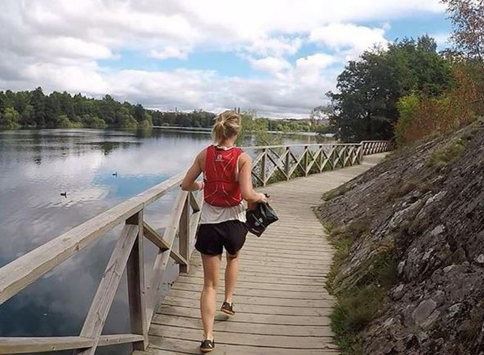

March 13, 2018
Plogging for the Planet

I bet that Finley would be plogging if she could. The term “plog” is a combination of “jog” and the Swedish term “plocka upp” which means to pick up. Pick up (or “pluck up if you prefer) while you jog. Plog gives a name to something that Finley did routinely, though she mostly did her picking up while walking.
The point of plogging is to make litter pick up part of your regular routine rather than assuming that someone else will do it. Make it a habit to take a used bag with you when head out and pick up some litter along the way. You don’t have to clean every bit of your route – you may never make it home again. But do something and do it routinely.
Some people wear gloves when they pick up trash, others simply wash their hands when they return home. Another option is to take a second bag and use it as a glove, then bag it up with the litter when you’ve hit your limit. By walking or jogging, your taking care of your personal health. By plogging, you’re helping your planet too.